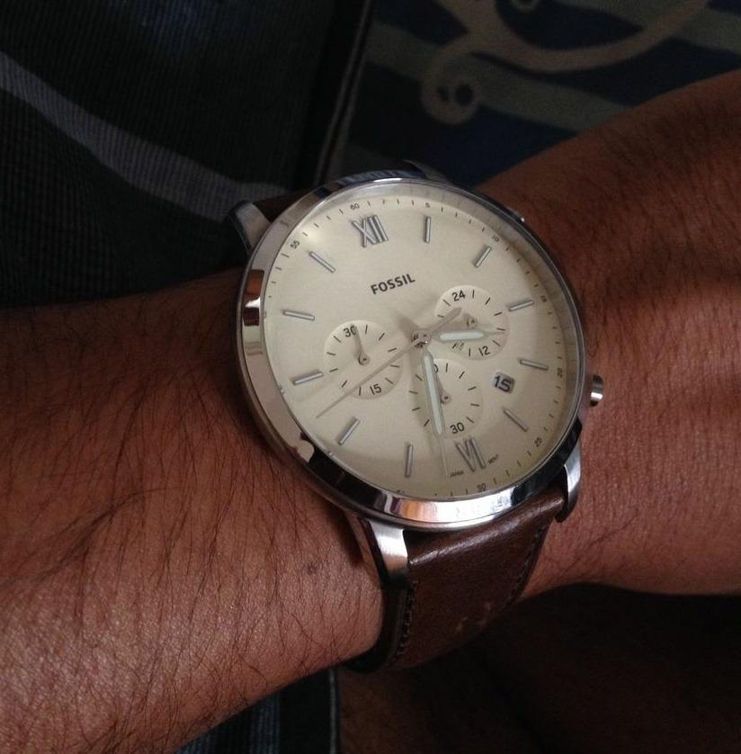
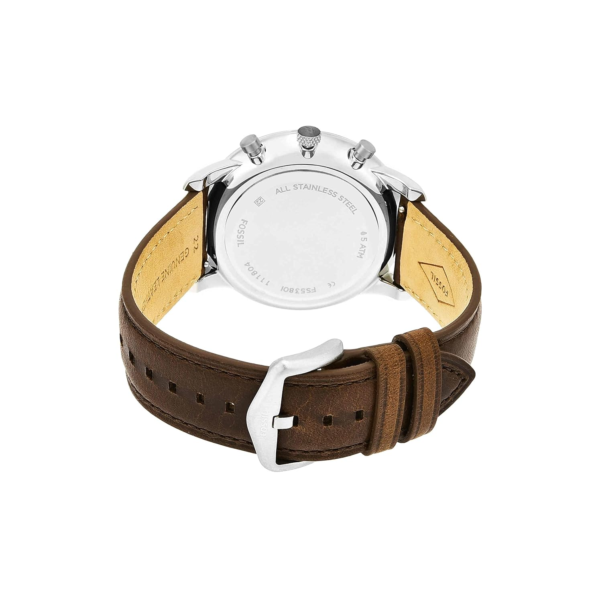
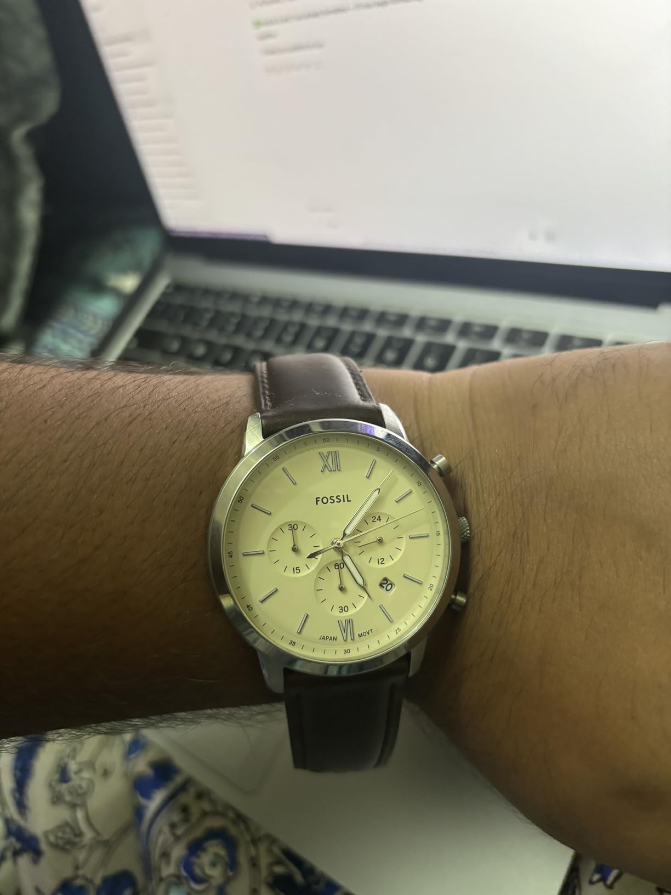
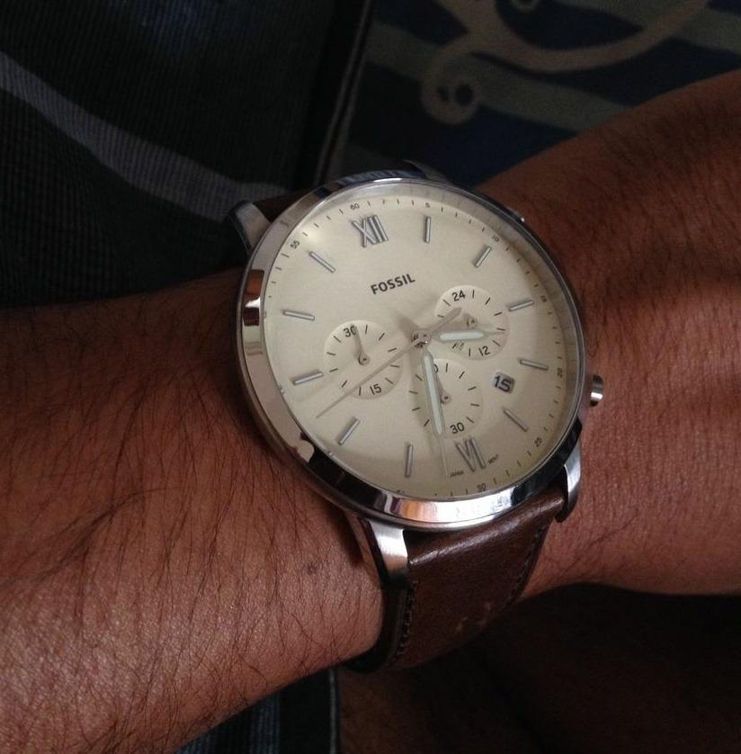
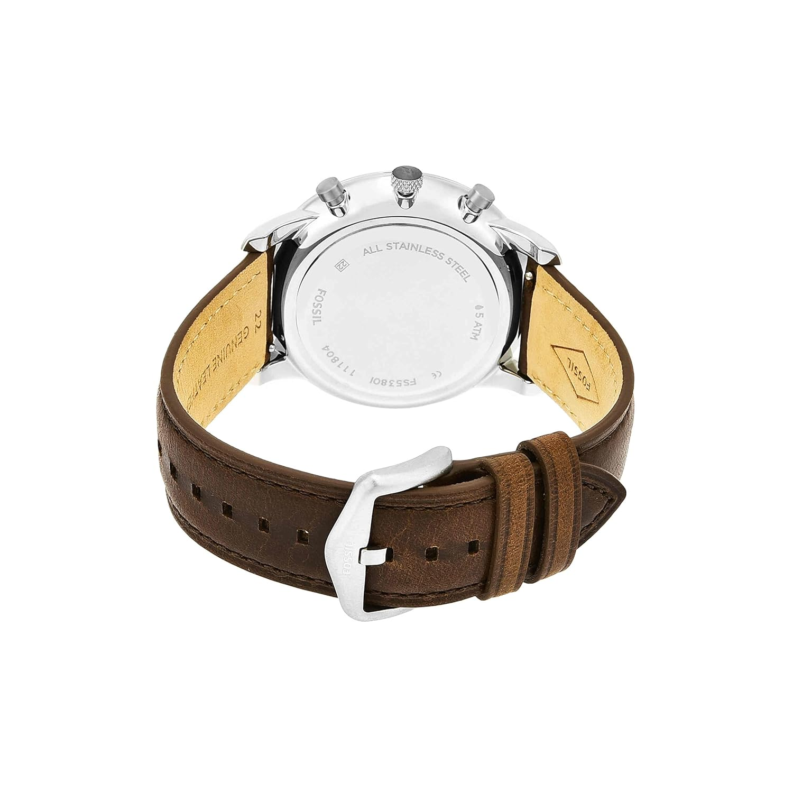
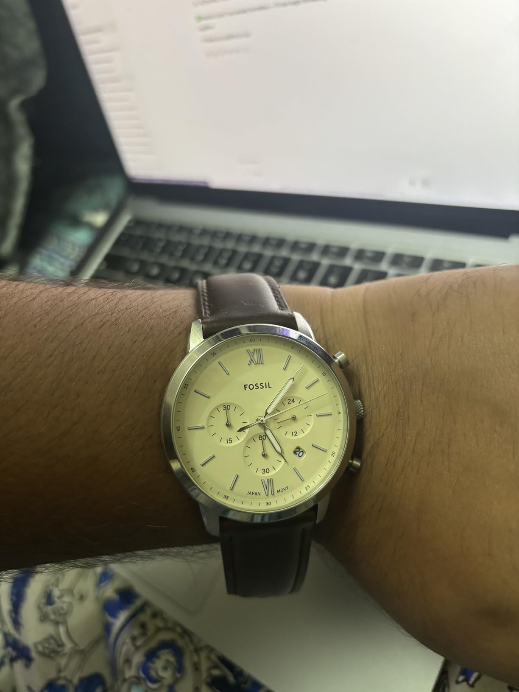
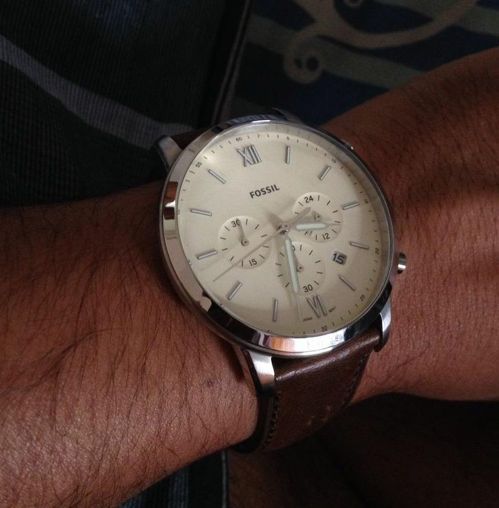
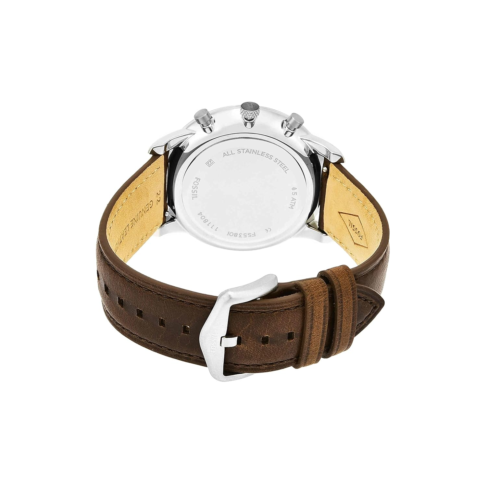
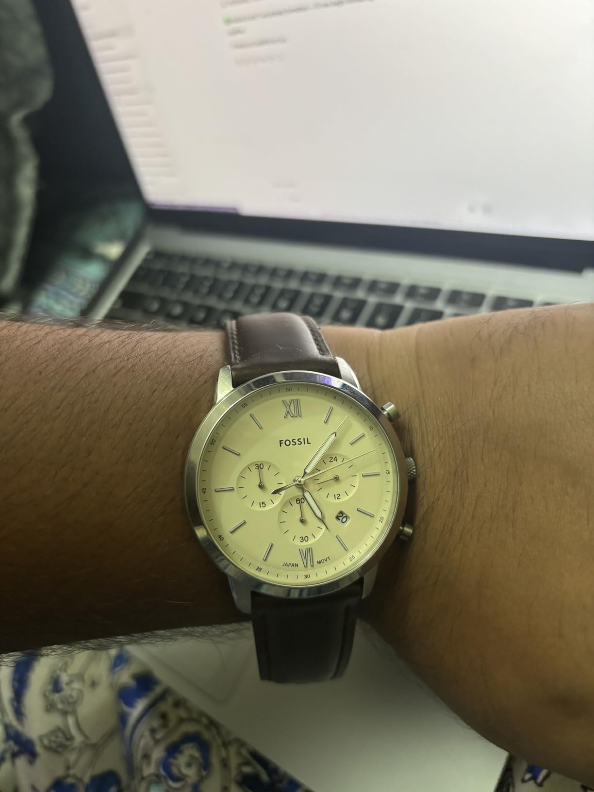
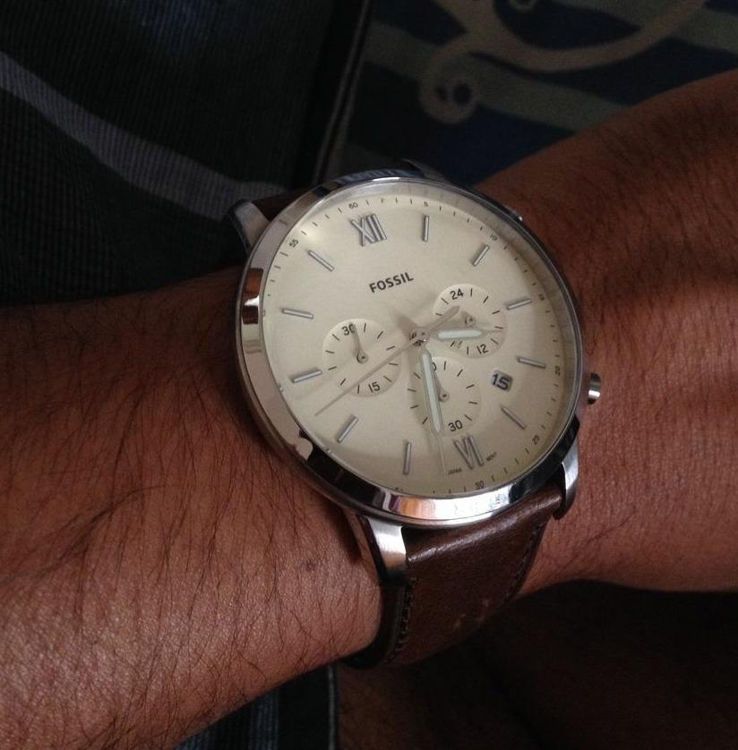
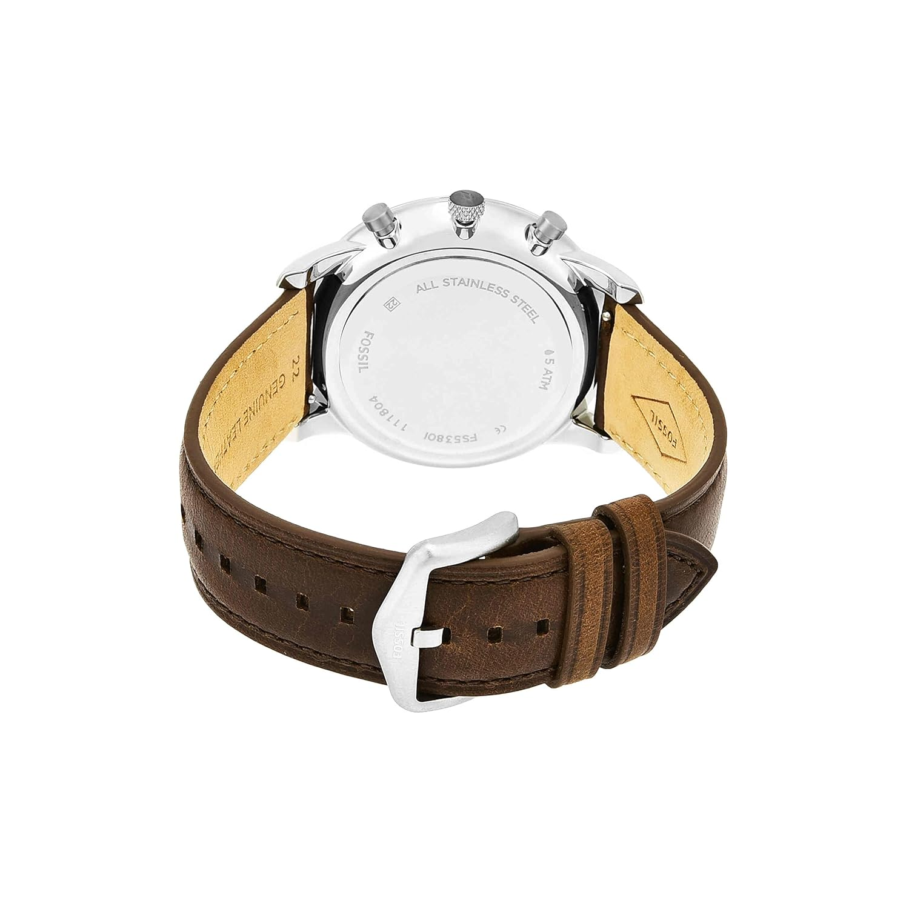
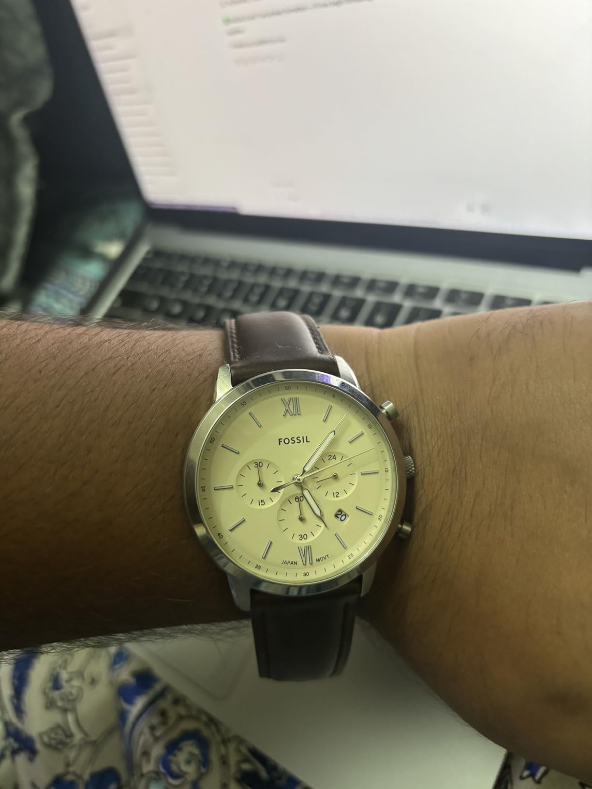
In the world of men’s fashion accessories, the Fossil Analog Off-White Dial Brown Band Men's Stainless Steel Watch – FS5380 stands out as a true statement of refined taste and modern elegance. Designed for the man who values sophistication as much as functionality, this watch combines an off-white dial with a rich brown stainless steel band to create a timeless look that complements both formal and casual outfits. The 44mm round stainless steel case offers a bold yet balanced presence on the wrist, while the scratch-resistant mineral glass ensures lasting clarity and durability. Whether you’re in the boardroom, attending a wedding, or enjoying a weekend getaway, this timepiece ensures you carry a touch of luxury wherever you go.
Featuring a precise quartz movement and a clear analog display, the Fossil FS5380 delivers accurate timekeeping without compromising on style. Its carefully crafted dial design, with elegant index markers and luminous hands, makes it easy to read even in low-light conditions. The watch is also water-resistant, giving you confidence during monsoon rains or accidental splashes. In a price segment where style often comes at the expense of build quality, this model offers both – earning a solid 4.4 out of 5 stars from over 1,400 reviews. Many customers praise its premium feel and the number of compliments they receive while wearing it, proving that this is more than just a watch – it’s an investment in your image.
When compared to other premium men’s watches in India, the Fossil FS5380 delivers incredible value for its ₹12,067 price tag. While brands like Casio, Titan, or Seiko have their appeal, Fossil’s combination of American design heritage and premium finishing makes it a cut above the rest in this category. The brown stainless steel band adds a distinctive character – a refreshing alternative to the standard silver or black straps most men wear – and the off-white dial brings an understated charm that stands out without being flashy.
Ordering this watch online is effortless. With Amazon Fulfilled service, you can enjoy fast delivery anywhere in India, along with cash on delivery and hassle-free returns. Plus, you’ll receive a 2-year manufacturer warranty covering manufacturing defects, ensuring peace of mind for years to come. Whether you’re buying it for yourself or gifting it to someone special, this watch fits seamlessly into both roles – a personal indulgence and a thoughtful present.
If you’ve been searching for the best premium men’s watch under ₹15,000 in India that offers both style and substance, the Fossil Analog FS5380 should be at the top of your list. Don’t wait for the price to rise or stock to run out – click here to check availability and buy now. Every day you delay is another day you could be wearing the confidence, style, and class that only a truly exceptional watch can provide.